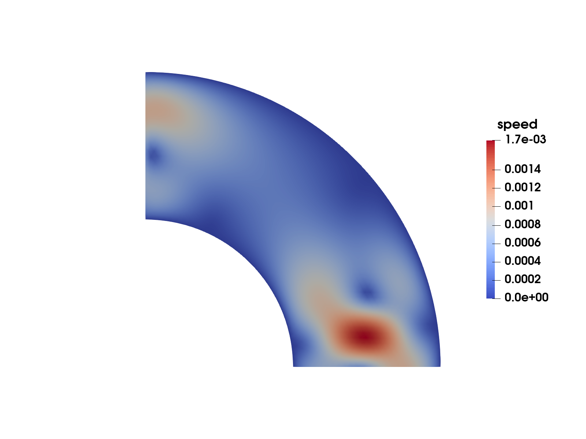
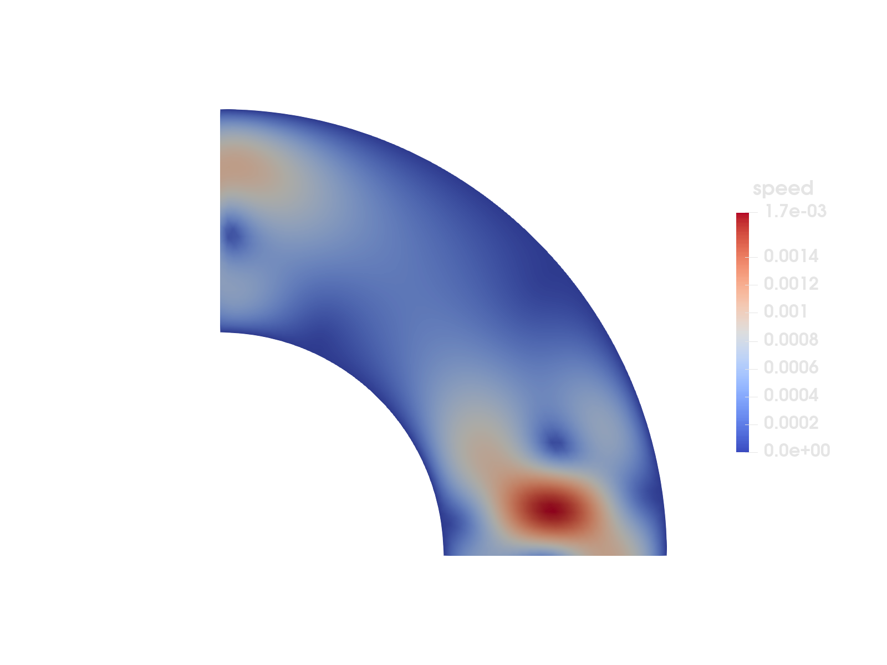

Stokes flow
Keywords: periodic boundary conditions, multiple fields, mean value constraint
This example is also available as a Jupyter notebook: stokes-flow.ipynb.


Figure 1: Magnitude of the resulting velocity field on the quarter disk domain $\Omega$ (see Figure 2).Introduction and problem formulation
This example is a translation of the step-45 example from deal.ii which solves Stokes flow on a quarter circle. In particular it shows how to use periodic boundary conditions, how to solve a problem with multiple unknown fields, and how to enforce a specific mean value of the solution. For the mesh generation we use Gmsh.jl and then use FerriteGmsh.jl to import the mesh into Ferrite's format.
The strong form of Stokes flow with velocity $\boldsymbol{u}$ and pressure $p$ can be written as follows:
\[\begin{align*} -\Delta \boldsymbol{u} + \boldsymbol{\nabla} p &= \bigl(\exp(-100||\boldsymbol{x} - (0.75, 0.1)||^2), 0\bigr) =: \boldsymbol{b} \quad \forall \boldsymbol{x} \in \Omega,\\ -\boldsymbol{\nabla} \cdot \boldsymbol{u} &= 0 \quad \forall \boldsymbol{x} \in \Omega, \end{align*}\]
where the domain is defined as $\Omega = \{\boldsymbol{x} \in (0, 1)^2: \ ||\boldsymbol{x}|| \in (0.5, 1)\}$, see Figure 2. For the velocity we use periodic boundary conditions on the inlet $\Gamma_1$ and outlet $\Gamma_3$:
\[\begin{align*} u_x(0,\nu) &= -u_y(\nu, 0) \quad & \nu\ \in\ [0.5, 1],\\ u_y(0,\nu) &= u_x(\nu, 0) \quad & \nu\ \in\ [0.5, 1], \end{align*}\]
and homogeneous Dirichlet boundary conditions for $\Gamma_2$ and $\Gamma_4$:
\[\boldsymbol{u} = \boldsymbol{0} \quad \forall \boldsymbol{x}\ \in\ \Gamma_2 \cup \Gamma_4 := \{ \boldsymbol{x}:\ ||\boldsymbol{x}|| \in \{0.5, 1\}\}.\]
Figure 2: Computational domain $\Omega$ with boundaries $\Gamma_1$, $\Gamma_3$ (periodic boundary conditions) and $\Gamma_2$, $\Gamma_4$ (homogeneous Dirichlet boundary conditions).
The corresponding weak form reads as follows: Find $(\boldsymbol{u}, p) \in \mathbb{U} \times \mathrm{L}_2$ s.t.
\[\begin{align*} \int_\Omega \Bigl[[\delta\boldsymbol{u}\otimes\boldsymbol{\nabla}]:[\boldsymbol{u}\otimes\boldsymbol{\nabla}] - (\boldsymbol{\nabla}\cdot\delta\boldsymbol{u})\ p\ \Bigr] \mathrm{d}\Omega &= \int_\Omega \delta\boldsymbol{u} \cdot \boldsymbol{b}\ \mathrm{d}\Omega \quad \forall \delta \boldsymbol{u} \in \mathbb{U},\\ \int_\Omega - (\boldsymbol{\nabla}\cdot\boldsymbol{u})\ \delta p\ \mathrm{d}\Omega &= 0 \quad \forall \delta p \in \mathrm{L}_2, \end{align*}\]
where $\mathbb{U}$ is a suitable function space, that, in particular, enforces the Dirichlet boundary conditions, and the periodicity constraints. This formulation is a saddle point problem, and, just like the example with Incompressible Elasticity, we need our formulation to fulfill the LBB condition. We ensure this by using a quadratic approximation for the velocity field, and a linear approximation for the pressure.
With this formulation and boundary conditions for $\boldsymbol{u}$ the pressure will only be determined up to a constant. We will therefore add an additional constraint which fixes this constant (see deal.ii step-11 for some more discussion around this). In particular, we will enforce the mean value of the pressure on the boundary to be 0, i.e. $\int_{\Gamma} p\ \mathrm{d}\Gamma = 0$. One option is to enforce this using a Lagrange multiplier. This would give a contribution $\lambda \int_{\Gamma} \delta p\ \mathrm{d}\Gamma$ to the second equation in the weak form above, and a third equation $\delta\lambda \int_{\Gamma} p\ \mathrm{d}\Gamma = 0$ so that we can solve for $\lambda$. However, since we in this case are not interested in computing $\lambda$, and since the constraint is linear, we can directly embed this constraint using an AffineConstraint in Ferrite.
After FE discretization we obtain a linear system of the form $\underline{\underline{K}}\ \underline{a} = \underline{f}$, where
\[\underline{\underline{K}} = \begin{bmatrix} \underline{\underline{K}}_{uu} & \underline{\underline{K}}_{pu}^\textrm{T} \\ \underline{\underline{K}}_{pu} & \underline{\underline{0}} \end{bmatrix}, \quad \underline{a} = \begin{bmatrix} \underline{a}_{u} \\ \underline{a}_{p} \end{bmatrix}, \quad \underline{f} = \begin{bmatrix} \underline{f}_{u} \\ \underline{0} \end{bmatrix},\]
and where
\[\begin{align*} (\underline{\underline{K}}_{uu})_{ij} &= \int_\Omega [\boldsymbol{\phi}^u_i\otimes\boldsymbol{\nabla}]:[\boldsymbol{\phi}^u_j\otimes\boldsymbol{\nabla}] \mathrm{d}\Omega, \\ (\underline{\underline{K}}_{pu})_{ij} &= \int_\Omega - (\boldsymbol{\nabla}\cdot\boldsymbol{\phi}^u_j)\ \phi^p_i\ \mathrm{d}\Omega, \\ (\underline{f}_{u})_{i} &= \int_\Omega \boldsymbol{\phi}^u_i \cdot \boldsymbol{b}\ \mathrm{d}\Omega. \end{align*}\]
The affine constraint to enforce zero mean pressure on the boundary is obtained from $\underline{\underline{C}}_p\ \underline{a}_p = \underline{0}$, where
\[(\underline{\underline{C}}_p)_{1j} = \int_{\Gamma} \phi^p_j\ \mathrm{d}\Gamma.\]
The constraint matrix $\underline{\underline{C}}_p$ is the same matrix we would have obtained when assembling the system with the Lagrange multiplier. In that case the full system would be
\[\underline{\underline{K}} = \begin{bmatrix} \underline{\underline{K}}_{uu} & \underline{\underline{K}}_{pu}^\textrm{T} & \underline{\underline{0}}\\ \underline{\underline{K}}_{pu} & \underline{\underline{0}} & \underline{\underline{C}}_p^\mathrm{T} \\ \underline{\underline{0}} & \underline{\underline{C}}_p & 0 \\ \end{bmatrix}, \quad \underline{a} = \begin{bmatrix} \underline{a}_{u} \\ \underline{a}_{p} \\ \underline{a}_{\lambda} \end{bmatrix}, \quad \underline{f} = \begin{bmatrix} \underline{f}_{u} \\ \underline{0} \\ \underline{0} \end{bmatrix}.\]
Commented program
What follows is a program spliced with comments. The full program, without comments, can be found in the next section.
using Ferrite, FerriteGmsh, Gmsh, Tensors, LinearAlgebra, SparseArraysGeometry and mesh generation with Gmsh.jl
In the setup_grid function below we use the Gmsh.jl package for setting up the geometry and performing the meshing. We will not discuss this part in much detail but refer to the Gmsh API documentation instead. The most important thing to note is the mesh periodicity constraint that is applied between the "inlet" and "outlet" parts using gmsh.model.set_periodic. This is necessary to later on apply a periodicity constraint for the approximated velocity field.
function setup_grid(h = 0.05) # Initialize gmsh Gmsh.initialize() gmsh.option.set_number("General.Verbosity", 2) # Add the points o = gmsh.model.geo.add_point(0.0, 0.0, 0.0, h) p1 = gmsh.model.geo.add_point(0.5, 0.0, 0.0, h) p2 = gmsh.model.geo.add_point(1.0, 0.0, 0.0, h) p3 = gmsh.model.geo.add_point(0.0, 1.0, 0.0, h) p4 = gmsh.model.geo.add_point(0.0, 0.5, 0.0, h) # Add the lines l1 = gmsh.model.geo.add_line(p1, p2) l2 = gmsh.model.geo.add_circle_arc(p2, o, p3) l3 = gmsh.model.geo.add_line(p3, p4) l4 = gmsh.model.geo.add_circle_arc(p4, o, p1) # Create the closed curve loop and the surface loop = gmsh.model.geo.add_curve_loop([l1, l2, l3, l4]) surf = gmsh.model.geo.add_plane_surface([loop]) # Synchronize the model gmsh.model.geo.synchronize() # Create the physical domains gmsh.model.add_physical_group(1, [l1], -1, "Γ1") gmsh.model.add_physical_group(1, [l2], -1, "Γ2") gmsh.model.add_physical_group(1, [l3], -1, "Γ3") gmsh.model.add_physical_group(1, [l4], -1, "Γ4") gmsh.model.add_physical_group(2, [surf]) # Add the periodicity constraint using 4x4 affine transformation matrix, # see https://en.wikipedia.org/wiki/Transformation_matrix#Affine_transformations transformation_matrix = zeros(4, 4) # In the 2D rotation block, cos(-pi/2) gives the zero diagonal entries. transformation_matrix[1, 2] = 1 # -sin(-pi/2) transformation_matrix[2, 1] = -1 # sin(-pi/2) transformation_matrix[3, 3] = 1 transformation_matrix[4, 4] = 1 transformation_matrix = vec(transformation_matrix') gmsh.model.mesh.set_periodic(1, [l1], [l3], transformation_matrix) # Generate a 2D mesh gmsh.model.mesh.generate(2) # Save the mesh, and read back in as a Ferrite Grid grid = mktempdir() do dir path = joinpath(dir, "mesh.msh") gmsh.write(path) togrid(path) end # Finalize the Gmsh library Gmsh.finalize() return gridendDegrees of freedom
As mentioned in the introduction we will use a quadratic approximation for the velocity field and a linear approximation for the pressure to ensure that we fulfill the LBB condition. We create the corresponding FE values with interpolations ipu for the velocity and ipp for the pressure. Note that we specify linear geometric mapping (ipg) for both the velocity and pressure because our grid contains linear triangles. However, since linear mapping is default this could have been skipped. We also construct facet-values for the pressure since we need to integrate along the boundary when assembling the constraint matrix $\underline{\underline{C}}$. Here, we choose to use two separate CellValues instead of a single MultiFieldCellValues to demonstrate this alternative. Here, we don't need the shape gradients of the pressure field, so we request that these are not updated.
function setup_fevalues(ipu, ipp, ipg) qr = QuadratureRule{RefTriangle}(2) cvu = CellValues(qr, ipu, ipg) cvp = CellValues(qr, ipp, ipg; update_gradients = false, update_detJdV = false) qr_facet = FacetQuadratureRule{RefTriangle}(2) fvp = FacetValues(qr_facet, ipp, ipg; update_gradients = false) return cvu, cvp, fvpendThe setup_dofs function creates the DofHandler, and adds the two fields: a vector field :u with interpolation ipu, and a scalar field :p with interpolation ipp.
function setup_dofs(grid, ipu, ipp) dh = DofHandler(grid) add!(dh, :u, ipu) add!(dh, :p, ipp) close!(dh) return dhendBoundary conditions and constraints
Now it is time to setup the ConstraintHandler and add our boundary conditions and the mean value constraint. This is perhaps the most interesting section in this example, and deserves some attention.
Let's first discuss the assembly of the constraint matrix $\underline{\underline{C}}$ and how to create an AffineConstraint from it. This is done in the setup_mean_constraint function below. Assembling this is not so different from standard assembly in Ferrite: we loop over all the facets, loop over the quadrature points, and loop over the shape functions. Note that since there is only one constraint the matrix will only have one row. After assembling C we construct an AffineConstraint from it. We select the constrained dof to be the one with the highest weight (just to avoid selecting one with 0 or a very small weight), then move the remaining to the right hand side. As an example, consider the case where the constraint equation $\underline{\underline{C}}_p\ \underline{a}_p$ is
\[w_{10} p_{10} + w_{23} p_{23} + w_{154} p_{154} = 0\]
i.e. dofs 10, 23, and 154, are the ones located on the boundary (all other dofs naturally gives 0 contribution). If $w_{23}$ is the largest weight, then we select $p_{23}$ to be the constrained one, and thus reorder the constraint to the form
\[p_{23} = -\frac{w_{10}}{w_{23}} p_{10} -\frac{w_{154}}{w_{23}} p_{154} + 0,\]
which is the form the AffineConstraint constructor expects.
If all nodes along the boundary are equidistant all the weights would be the same. In this case we can construct the constraint without having to do any integration by simply finding all degrees of freedom that are located along the boundary (and using 1 as the weight). This is what is done in the deal.ii step-11 example.
function setup_mean_constraint(dh, fvp) assembler = Ferrite.COOAssembler() # All external boundaries set = union( getfacetset(dh.grid, "Γ1"), getfacetset(dh.grid, "Γ2"), getfacetset(dh.grid, "Γ3"), getfacetset(dh.grid, "Γ4"), ) # Allocate buffers range_p = dof_range(dh, :p) element_dofs = zeros(Int, ndofs_per_cell(dh)) element_dofs_p = view(element_dofs, range_p) element_coords = zeros(Vec{2}, 3) Ce = zeros(1, length(range_p)) # Local constraint matrix (only 1 row) # Loop over all the boundaries for (ci, fi) in set Ce .= 0 getcoordinates!(element_coords, dh.grid, ci) reinit!(fvp, element_coords, fi) celldofs!(element_dofs, dh, ci) for qp in 1:getnquadpoints(fvp) dΓ = getdetJdV(fvp, qp) for i in 1:getnbasefunctions(fvp) Ce[1, i] += shape_value(fvp, qp, i) * dΓ end end # Assemble to row 1 assemble!(assembler, [1], element_dofs_p, Ce) end C, _ = finish_assemble(assembler) # Create an AffineConstraint from the C-matrix _, J, V = findnz(C) _, constrained_dof_idx = findmax(abs2, V) constrained_dof = J[constrained_dof_idx] V ./= V[constrained_dof_idx] mean_value_constraint = AffineConstraint( constrained_dof, Pair{Int, Float64}[J[i] => -V[i] for i in 1:length(J) if J[i] != constrained_dof], 0.0, ) return mean_value_constraintendWe now setup all the boundary conditions in the setup_constraints function below. Since the periodicity constraint for this example is between two boundaries which are not parallel to each other we need to i) compute the mapping between each mirror facet and the corresponding image facet (on the element level) and ii) describe the dof relation between dofs on these two facets. In Ferrite this is done by defining a transformation of entities on the image boundary such that they line up with the matching entities on the mirror boundary. In this example we consider the inlet $\Gamma_1$ to be the image, and the outlet $\Gamma_3$ to be the mirror. The necessary transformation to apply then becomes a rotation of $\pi/2$ radians around the out-of-plane axis. We set up the rotation matrix R, and then compute the mapping between mirror and image facets using collect_periodic_facets where the rotation is applied to the coordinates. In the next step we construct the constraint using the PeriodicDirichlet constructor. We pass the constructor the computed mapping, and also the rotation matrix. This matrix is used to rotate the dofs on the mirror surface such that we properly constrain $\boldsymbol{u}_x$-dofs on the mirror to $-\boldsymbol{u}_y$-dofs on the image, and $\boldsymbol{u}_y$-dofs on the mirror to $\boldsymbol{u}_x$-dofs on the image.
For the remaining part of the boundary we add a homogeneous Dirichlet boundary condition on both components of the velocity field. This is done using the Dirichlet constructor, which we have discussed in other tutorials.
function setup_constraints(dh, fvp) ch = ConstraintHandler(dh) # Periodic BC R = rotation_tensor(π / 2) periodic_faces = collect_periodic_facets(dh.grid, "Γ3", "Γ1", x -> R ⋅ x) periodic = PeriodicDirichlet(:u, periodic_faces, R, [1, 2]) add!(ch, periodic) # Dirichlet BC Γ24 = union(getfacetset(dh.grid, "Γ2"), getfacetset(dh.grid, "Γ4")) dbc = Dirichlet(:u, Γ24, (x, t) -> [0, 0], [1, 2]) add!(ch, dbc) # Compute mean value constraint and add it mean_value_constraint = setup_mean_constraint(dh, fvp) add!(ch, mean_value_constraint) # Finalize close!(ch) update!(ch, 0) return chendGlobal and local assembly
Assembly of the global system is also something that we have seen in many previous tutorials. One interesting thing to note here is that, since we have two unknown fields, we use the dof_range function to make sure we assemble the element contributions to the correct block of the local stiffness matrix ke.
function assemble_system!(K, f, dh, cvu, cvp) assembler = start_assemble(K, f) ke = zeros(ndofs_per_cell(dh), ndofs_per_cell(dh)) fe = zeros(ndofs_per_cell(dh)) range_u = dof_range(dh, :u) ndofs_u = length(range_u) range_p = dof_range(dh, :p) ndofs_p = length(range_p) ϕᵤ = Vector{Vec{2, Float64}}(undef, ndofs_u) ∇ϕᵤ = Vector{Tensor{2, 2, Float64, 4}}(undef, ndofs_u) divϕᵤ = Vector{Float64}(undef, ndofs_u) ϕₚ = Vector{Float64}(undef, ndofs_p) for cell in CellIterator(dh) reinit!(cvu, cell) reinit!(cvp, cell) ke .= 0 fe .= 0 for qp in 1:getnquadpoints(cvu) dΩ = getdetJdV(cvu, qp) for i in 1:ndofs_u ϕᵤ[i] = shape_value(cvu, qp, i) ∇ϕᵤ[i] = shape_gradient(cvu, qp, i) divϕᵤ[i] = shape_divergence(cvu, qp, i) end for i in 1:ndofs_p ϕₚ[i] = shape_value(cvp, qp, i) end # u-u for (i, I) in pairs(range_u), (j, J) in pairs(range_u) ke[I, J] += (∇ϕᵤ[i] ⊡ ∇ϕᵤ[j]) * dΩ end # u-p for (i, I) in pairs(range_u), (j, J) in pairs(range_p) ke[I, J] += (-divϕᵤ[i] * ϕₚ[j]) * dΩ end # p-u for (i, I) in pairs(range_p), (j, J) in pairs(range_u) ke[I, J] += (-divϕᵤ[j] * ϕₚ[i]) * dΩ end # rhs for (i, I) in pairs(range_u) x = spatial_coordinate(cvu, qp, getcoordinates(cell)) b = exp(-100 * norm(x - Vec{2}((0.75, 0.1)))^2) bv = Vec{2}((b, 0.0)) fe[I] += (ϕᵤ[i] ⋅ bv) * dΩ end end assemble!(assembler, celldofs(cell), ke, fe) end return K, fendRunning the simulation
We now have all the puzzle pieces, and just need to define the main function, which puts them all together.
function main(h = 0.05) # h: approximate element size # Grid grid = setup_grid(h) # Interpolations ipu = Lagrange{RefTriangle, 2}()^2 # quadratic ipp = Lagrange{RefTriangle, 1}() # linear # Dofs dh = setup_dofs(grid, ipu, ipp) # FE values ipg = Lagrange{RefTriangle, 1}() # linear geometric interpolation cvu, cvp, fvp = setup_fevalues(ipu, ipp, ipg) # Boundary conditions ch = setup_constraints(dh, fvp) # Global tangent matrix and rhs coupling = [true true; true false] # no coupling between pressure test/trial functions K = allocate_matrix(dh, ch; coupling = coupling) f = zeros(ndofs(dh)) # Assemble system assemble_system!(K, f, dh, cvu, cvp) # Apply boundary conditions and solve apply!(K, f, ch) u = K \ f apply!(u, ch) # Export the solution VTKGridFile("stokes-flow", grid) do vtk write_solution(vtk, dh, u) end returnendRun it!
main()The resulting magnitude of the velocity field is visualized in Figure 1.
Plain program
Here follows a version of the program without any comments. The file is also available here: stokes-flow.jl.
using Ferrite, FerriteGmsh, Gmsh, Tensors, LinearAlgebra, SparseArraysfunction setup_grid(h = 0.05) # Initialize gmsh Gmsh.initialize() gmsh.option.set_number("General.Verbosity", 2) # Add the points o = gmsh.model.geo.add_point(0.0, 0.0, 0.0, h) p1 = gmsh.model.geo.add_point(0.5, 0.0, 0.0, h) p2 = gmsh.model.geo.add_point(1.0, 0.0, 0.0, h) p3 = gmsh.model.geo.add_point(0.0, 1.0, 0.0, h) p4 = gmsh.model.geo.add_point(0.0, 0.5, 0.0, h) # Add the lines l1 = gmsh.model.geo.add_line(p1, p2) l2 = gmsh.model.geo.add_circle_arc(p2, o, p3) l3 = gmsh.model.geo.add_line(p3, p4) l4 = gmsh.model.geo.add_circle_arc(p4, o, p1) # Create the closed curve loop and the surface loop = gmsh.model.geo.add_curve_loop([l1, l2, l3, l4]) surf = gmsh.model.geo.add_plane_surface([loop]) # Synchronize the model gmsh.model.geo.synchronize() # Create the physical domains gmsh.model.add_physical_group(1, [l1], -1, "Γ1") gmsh.model.add_physical_group(1, [l2], -1, "Γ2") gmsh.model.add_physical_group(1, [l3], -1, "Γ3") gmsh.model.add_physical_group(1, [l4], -1, "Γ4") gmsh.model.add_physical_group(2, [surf]) # Add the periodicity constraint using 4x4 affine transformation matrix, # see https://en.wikipedia.org/wiki/Transformation_matrix#Affine_transformations transformation_matrix = zeros(4, 4) # In the 2D rotation block, cos(-pi/2) gives the zero diagonal entries. transformation_matrix[1, 2] = 1 # -sin(-pi/2) transformation_matrix[2, 1] = -1 # sin(-pi/2) transformation_matrix[3, 3] = 1 transformation_matrix[4, 4] = 1 transformation_matrix = vec(transformation_matrix') gmsh.model.mesh.set_periodic(1, [l1], [l3], transformation_matrix) # Generate a 2D mesh gmsh.model.mesh.generate(2) # Save the mesh, and read back in as a Ferrite Grid grid = mktempdir() do dir path = joinpath(dir, "mesh.msh") gmsh.write(path) togrid(path) end # Finalize the Gmsh library Gmsh.finalize() return gridendfunction setup_fevalues(ipu, ipp, ipg) qr = QuadratureRule{RefTriangle}(2) cvu = CellValues(qr, ipu, ipg) cvp = CellValues(qr, ipp, ipg; update_gradients = false, update_detJdV = false) qr_facet = FacetQuadratureRule{RefTriangle}(2) fvp = FacetValues(qr_facet, ipp, ipg; update_gradients = false) return cvu, cvp, fvpendfunction setup_dofs(grid, ipu, ipp) dh = DofHandler(grid) add!(dh, :u, ipu) add!(dh, :p, ipp) close!(dh) return dhendfunction setup_mean_constraint(dh, fvp) assembler = Ferrite.COOAssembler() # All external boundaries set = union( getfacetset(dh.grid, "Γ1"), getfacetset(dh.grid, "Γ2"), getfacetset(dh.grid, "Γ3"), getfacetset(dh.grid, "Γ4"), ) # Allocate buffers range_p = dof_range(dh, :p) element_dofs = zeros(Int, ndofs_per_cell(dh)) element_dofs_p = view(element_dofs, range_p) element_coords = zeros(Vec{2}, 3) Ce = zeros(1, length(range_p)) # Local constraint matrix (only 1 row) # Loop over all the boundaries for (ci, fi) in set Ce .= 0 getcoordinates!(element_coords, dh.grid, ci) reinit!(fvp, element_coords, fi) celldofs!(element_dofs, dh, ci) for qp in 1:getnquadpoints(fvp) dΓ = getdetJdV(fvp, qp) for i in 1:getnbasefunctions(fvp) Ce[1, i] += shape_value(fvp, qp, i) * dΓ end end # Assemble to row 1 assemble!(assembler, [1], element_dofs_p, Ce) end C, _ = finish_assemble(assembler) # Create an AffineConstraint from the C-matrix _, J, V = findnz(C) _, constrained_dof_idx = findmax(abs2, V) constrained_dof = J[constrained_dof_idx] V ./= V[constrained_dof_idx] mean_value_constraint = AffineConstraint( constrained_dof, Pair{Int, Float64}[J[i] => -V[i] for i in 1:length(J) if J[i] != constrained_dof], 0.0, ) return mean_value_constraintendfunction setup_constraints(dh, fvp) ch = ConstraintHandler(dh) # Periodic BC R = rotation_tensor(π / 2) periodic_faces = collect_periodic_facets(dh.grid, "Γ3", "Γ1", x -> R ⋅ x) periodic = PeriodicDirichlet(:u, periodic_faces, R, [1, 2]) add!(ch, periodic) # Dirichlet BC Γ24 = union(getfacetset(dh.grid, "Γ2"), getfacetset(dh.grid, "Γ4")) dbc = Dirichlet(:u, Γ24, (x, t) -> [0, 0], [1, 2]) add!(ch, dbc) # Compute mean value constraint and add it mean_value_constraint = setup_mean_constraint(dh, fvp) add!(ch, mean_value_constraint) # Finalize close!(ch) update!(ch, 0) return chendfunction assemble_system!(K, f, dh, cvu, cvp) assembler = start_assemble(K, f) ke = zeros(ndofs_per_cell(dh), ndofs_per_cell(dh)) fe = zeros(ndofs_per_cell(dh)) range_u = dof_range(dh, :u) ndofs_u = length(range_u) range_p = dof_range(dh, :p) ndofs_p = length(range_p) ϕᵤ = Vector{Vec{2, Float64}}(undef, ndofs_u) ∇ϕᵤ = Vector{Tensor{2, 2, Float64, 4}}(undef, ndofs_u) divϕᵤ = Vector{Float64}(undef, ndofs_u) ϕₚ = Vector{Float64}(undef, ndofs_p) for cell in CellIterator(dh) reinit!(cvu, cell) reinit!(cvp, cell) ke .= 0 fe .= 0 for qp in 1:getnquadpoints(cvu) dΩ = getdetJdV(cvu, qp) for i in 1:ndofs_u ϕᵤ[i] = shape_value(cvu, qp, i) ∇ϕᵤ[i] = shape_gradient(cvu, qp, i) divϕᵤ[i] = shape_divergence(cvu, qp, i) end for i in 1:ndofs_p ϕₚ[i] = shape_value(cvp, qp, i) end # u-u for (i, I) in pairs(range_u), (j, J) in pairs(range_u) ke[I, J] += (∇ϕᵤ[i] ⊡ ∇ϕᵤ[j]) * dΩ end # u-p for (i, I) in pairs(range_u), (j, J) in pairs(range_p) ke[I, J] += (-divϕᵤ[i] * ϕₚ[j]) * dΩ end # p-u for (i, I) in pairs(range_p), (j, J) in pairs(range_u) ke[I, J] += (-divϕᵤ[j] * ϕₚ[i]) * dΩ end # rhs for (i, I) in pairs(range_u) x = spatial_coordinate(cvu, qp, getcoordinates(cell)) b = exp(-100 * norm(x - Vec{2}((0.75, 0.1)))^2) bv = Vec{2}((b, 0.0)) fe[I] += (ϕᵤ[i] ⋅ bv) * dΩ end end assemble!(assembler, celldofs(cell), ke, fe) end return K, fendfunction main(h = 0.05) # h: approximate element size # Grid grid = setup_grid(h) # Interpolations ipu = Lagrange{RefTriangle, 2}()^2 # quadratic ipp = Lagrange{RefTriangle, 1}() # linear # Dofs dh = setup_dofs(grid, ipu, ipp) # FE values ipg = Lagrange{RefTriangle, 1}() # linear geometric interpolation cvu, cvp, fvp = setup_fevalues(ipu, ipp, ipg) # Boundary conditions ch = setup_constraints(dh, fvp) # Global tangent matrix and rhs coupling = [true true; true false] # no coupling between pressure test/trial functions K = allocate_matrix(dh, ch; coupling = coupling) f = zeros(ndofs(dh)) # Assemble system assemble_system!(K, f, dh, cvu, cvp) # Apply boundary conditions and solve apply!(K, f, ch) u = K \ f apply!(u, ch) # Export the solution VTKGridFile("stokes-flow", grid) do vtk write_solution(vtk, dh, u) end returnendmain()This page was generated using Literate.jl.